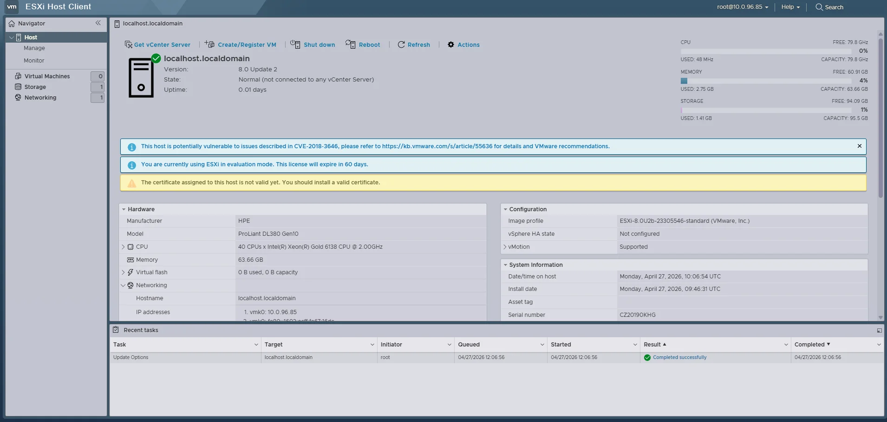
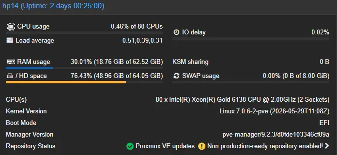
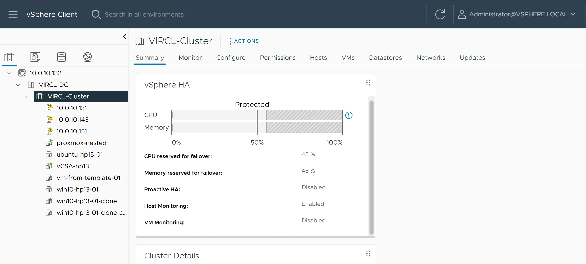
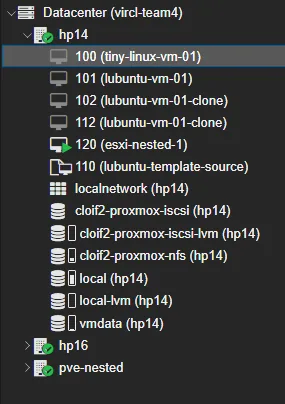
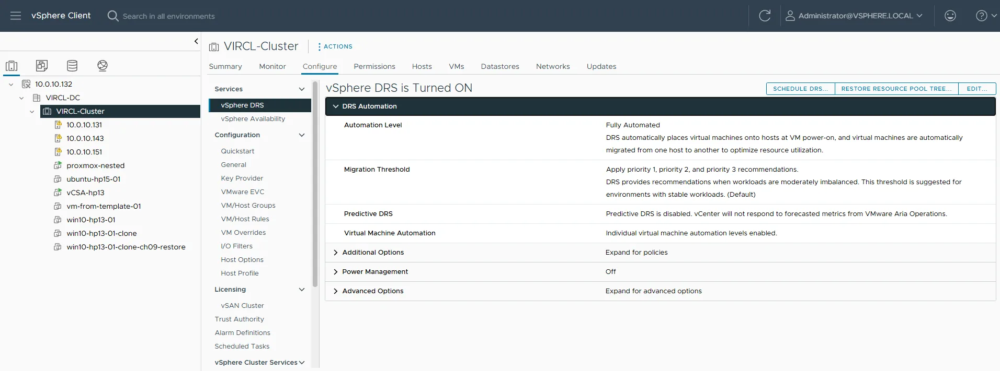
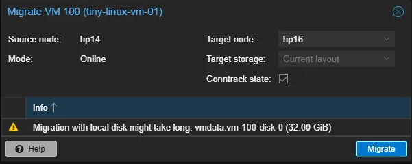

Four bare HP servers, two hypervisors
For the VIRCL module of the BTS in Cloud Computing, my teammate Andrea Girotto and I were handed four bare HP ProLiant servers (HP13–HP16) and one rule: become experts in two type-1 hypervisors and prove it. We installed VMware ESXi with vCenter on HP13 and HP15, Proxmox VE on HP14 and HP16, wired an Unraid box as shared NFS/iSCSI storage, and then implemented every required feature on both platforms — installing, configuring, breaking, and documenting each one. The images below are each hypervisor's built-in web dashboard — the ESXi Host Client and the Proxmox VE summary — on the HP hosts right after install.

ESXi Host Client on an HP ProLiant DL380 Gen10

Proxmox VE host summary (HP14)
What we built on both platforms
The project is organised feature-by-feature rather than server-by-server: every capability below was implemented on VMware ESXi/vCenter and on Proxmox VE, then compared. These are the layers that result.
Hypervisor deployment
- Bare-metal installs over iLO: both ISOs mounted from the school NAS as iLO virtual media — no USB stick, both hosts booted from the virtual CD.
- vCenter Server Appliance: VCSA deployed on HP13 in two stages; PNID set to the IP (not a hostname) to dodge a reverse-DNS check while lab DNS was incomplete.
- Proxmox post-install: enterprise repo swapped for the no-subscription repo,
apt dist-upgrade, and the 1.09 TiB volume turned into an LVM-thin pool for VM disks.
VM lifecycle — GUI & CLI
qm commands straight on the node- Create both ways: VMs built through the GUI wizard and again from the CLI (PowerCLI on ESXi,
qmon Proxmox), then a Windows client and a Linux server installed inside. - Reconfigure & clone: live CPU/RAM/disk/NIC changes, full clones, and OVF / vzdump exports — proving the everyday admin workflow on each side.
- Snapshots & templates: point-in-time snapshots and golden templates so new VMs come from a known-good base instead of a fresh install each time.
Shared storage & live migration
- Two protocols from one NAS: the Unraid box exposes NFS and iSCSI so each hypervisor could mount shared datastores its preferred way.
- Storage migration: moving a VM's disk between local and remote storage live — the prerequisite that makes host migration safe.
- Host migration: a running VM moved HP13 → HP15 (vMotion) and HP14 → HP16 (Proxmox online migration) once its disk lived on shared storage.
Backup, users & patching
vim-cmd config bundle + role-based permissions · Proxmox: vzdump + pveum users/ACLs- Config & VM backups: host configuration bundles downloaded on the ESXi side, scheduled
vzdumparchives on the Proxmox side, plus VM-level export/restore. - Users & permissions: role-based access in vCenter and realm/ACL users in Proxmox, so admin rights are scoped instead of shared-root.
- Patching: both hypervisors brought to the latest updates from their respective repositories.
Specialisation — Clustering
- Real three-node quorum: with only two physical hosts per platform, a third node was nested inside the other hypervisor so quorum (and split-brain avoidance) could actually be demonstrated.
- vCenter side:
VIRCL-Clusterwith HP13, HP15 and the nested ESXi host; vSphere HA on, DRS fully automated, shared datastores visible to all hosts. - Proxmox side: cluster
vircl-team4with HP14, HP16 and a witness pve-nested node; an HA group keeping real workloads on the physical hosts only. - Honest limits: cross-hypervisor moves were treated as export/import (never vMotion), HA restart was never called "zero downtime", and nested nodes were never used as workload targets.
The clustering specialisation, in pictures
Both clusters ended up with three nodes thanks to the cross-platform nesting trick. On VMware, vCenter manages HP13, HP15 and the nested ESXi host as one cluster with HA and DRS; on Proxmox, Corosync ties HP14, HP16 and the witness node together and an HA group protects a VM on shared storage.

vCenter: three ESXi hosts, vSphere HA protected

Proxmox cluster vircl-team4: HP14, HP16 + nested node

vSphere DRS, fully automated

Proxmox online migration, HP14 → HP16
How the project ran
The brief was deliberately broad: become an expert in two hypervisors and prove it through a documented report, a video tutorial, and a presentation. Andrea and I split the hosts — he led HP13 (ESXi + vCenter) and HP16 (Proxmox), I led HP14 (Proxmox) and we shared HP15 (ESXi).
We then worked through seventeen virtualization features on both platforms — deployment, VM creation by GUI and CLI, guest installs, resource changes, cloning, export, backups, snapshots, templates, shared storage, storage and host migration, users, and patching — comparing each one and writing down the problems honestly.
Our chosen specialisation was Clustering. Four hosts only give two nodes per platform, which is weak for explaining quorum — so we nested a third node inside the opposite hypervisor on each side, giving both clusters a genuine three-vote design with HA, DRS, and live migration to show off.
Lessons learned
/16 vs /24 bites first
Both installers default to a /24 mask, but the lab is /16. Get it wrong and the node is reachable from its own subnet but cut off from everything else. Fixed on HP14, never repeated.
ESXi hates dots
The ESXi installer splits hostname and domain into two fields — typing hp13.vircl.local in the hostname box fails silently. Short name in one field, domain in the other.
vCenter needs DNS
VCSA Stage 2 does a reverse-DNS lookup on the PNID. With lab DNS half-populated, using the IP as the PNID avoided a deployment that would otherwise stall.
Forged Transmits drops nested traffic
A nested Proxmox node went silent because the ESXi vSwitch rejects "Forged Transmits" by default, killing replies from the inner Linux bridge. One setting, a whole troubleshooting session to find.
Trust size, not /dev/sdX
HPE Smart Array re-enumerates disks on the first reboot, so the device letter you installed onto can change. Always pick the target disk by its size.
Storage first, features later
vMotion, online migration, HA and templates only ever worked once shared storage, clean networking and central management were all correct at the same time.
Deliverables
A feature-by-feature documentation report comparing both hypervisors
Video tutorials demonstrating clustering on ESXi/vCenter and Proxmox
A live specialisation presentation on clustering
Two working three-node clusters across four physical servers
Read the full report
The complete graded deliverables — the feature-by-feature documentation comparing both hypervisors, and the clustering specialisation slides.
Documentation
The full VIRCL documentation report: all 17 virtualization features implemented and compared on VMware ESXi/vCenter and Proxmox VE, with screenshots, commands, and the clustering specialisation.
Download Documentation (PDF)Presentation
The specialisation presentation on clustering, used for the graded live demonstration on both hypervisors.
Download Presentation (PDF)